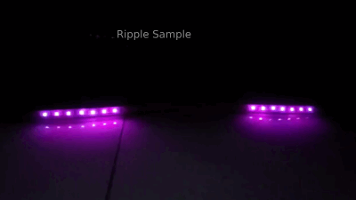

The Ripple Effect generates an effect like a ripple in a liquid space. This effect has two tales that start from a center point, and move in opposite directions.

Determines the length of your device LED. Attention, you can set this parameter more or less than your real LED size to limit the operational LEDs.
This parameter determines the length of the ripple tales.
This parameter determines the center of the the ripple.
This parameter determines if the ripple effect should be infinitely repeatable or play just once.
Lifetime of both tails before they fully disappear. For example if you set this parameter to 3, the tail will fully disappear after passing 3 led.
This parameter will determine the speed of tails moving.
Start Color and End Color will determine the color of the tails start, and end respectively, this will made a gradient on both tails. Gradient Algorithm will determine how the gradient is applied. There are two different algorithms for this:
Naive: Use direct mixture of two colors to generate colors.
Spectrum: Use colors with wavelength between start and end colors to generate colors, like a part of a rainbow:
You can add fade-in/fadeout like margins in both sides (or just one side) of the gradient in each tail. This will help your effect to seem more smooth. Margin Disappear Severity is another parameter related to margins which helps you to adjust the severity of fading in/out.